Graduation project · Ain Shams University · Sept 2024 – June 2025
AI-Automated Dental Crown Generation
Getting from a raw intraoral scan to a fitted crown takes four separate models. Three of them work; the fourth is built and waiting on data that does not exist yet.
Development repo Deployment repo Report, part 1 Report, part 2
The problem
To design a crown for a prepared tooth, a model cannot look at that tooth alone. The crown has to meet its neighbours on either side and occlude correctly against the opposing arch — so designing for tooth 35 means understanding 34 and 36 beside it and 24, 25 and 26 above it. That turns the first step into a fine-grained labelling problem: every point in the scan has to be assigned to one of 33 classes, the 32 teeth plus gingiva.
Everything downstream inherits the errors of that step, which is why most of the work went into it and into the preprocessing that makes it reliable.
Segmentation
Two architectures were compared on Teeth3DS: DGCNN, which builds a graph over each point's nearest neighbours and recomputes it at every layer, and the Point Cloud Transformer, which uses offset-attention to relate every point to every other.
Each was trained two ways: on scans pre-aligned into a fixed canonical space, and on randomly rotated scans so the model has to become invariant on its own. The split matters. In a fixed canonical space both models do well, and PCT reached 95% accuracy. Under random rigid transformations DGCNN degrades noticeably — it leans on a T-Net to align its input, and that T-Net is the weak link. PCT holds up better, but the invariant variant never caught up with the canonical-space one, even after a second semester of preprocessing and architectural tuning.
That result is what set up the rest of the project. The best segmentation model needs its input in a particular canonical pose — so something has to put it there.
The invariant model was then carried into a second semester of work — better sampling, cleaning and alignment in preprocessing, plus architectural tuning. It improved measurably: overall accuracy moved from roughly 78% to about 84%, and test mIoU from about 0.32 to 0.48. It still did not catch the canonical-space model.
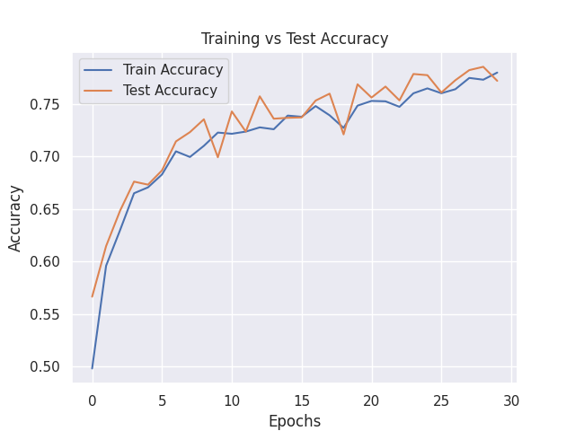
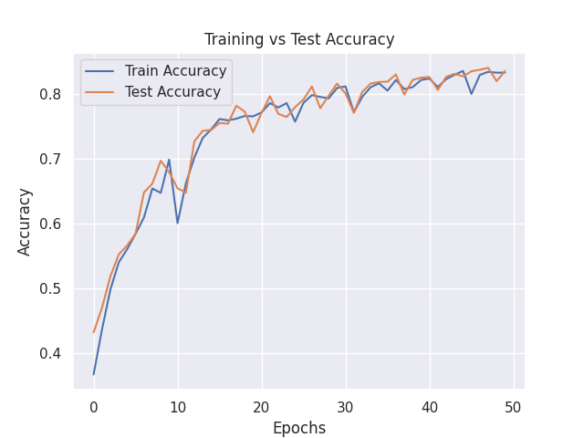
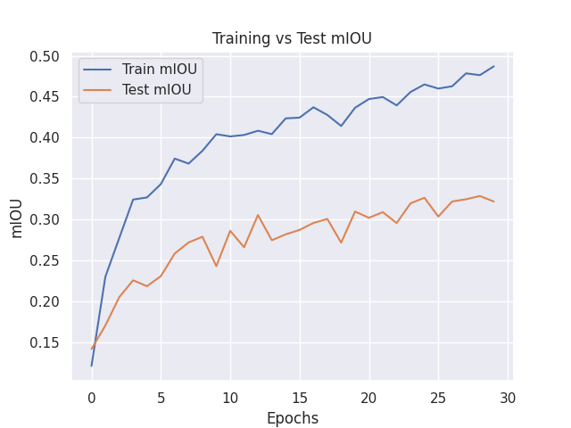
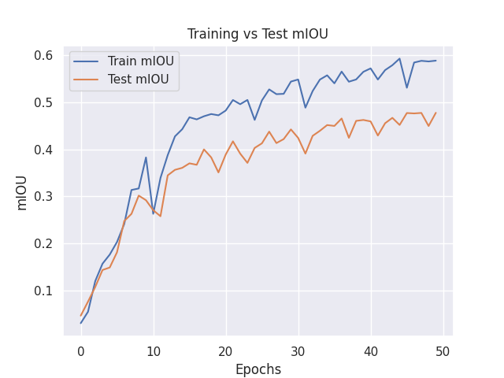


Canonical alignment
This is the part I would point at first. There are no labelled alignment pairs, so the network is trained against itself: centre each point cloud, apply a random rigid transformation, and ask the model to predict the inverse that undoes it. The loss combines reconstruction against the original with a regularisation term pushing the predicted 3×3 matrix toward orthogonality,
L = ‖X̄ − X̂‖²_F + λ‖I − RᵀR‖²_F (λ = 0.001)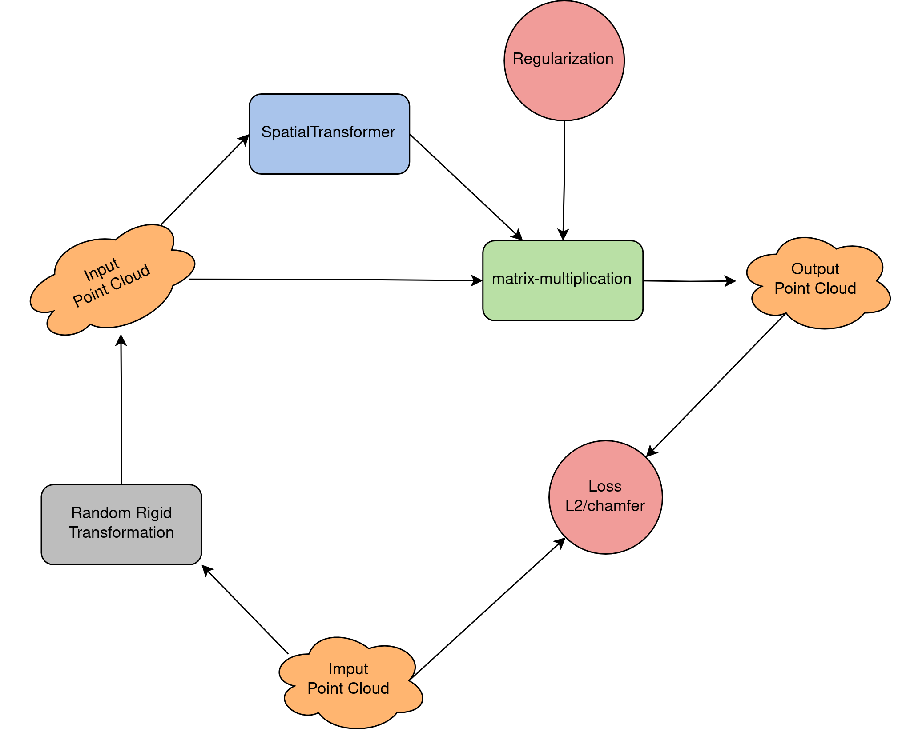
PointNet's original T-Net was the obvious starting point and it did not work — a pointwise MLP followed by a max-pool cannot see enough local geometry to infer a rotation. Replacing it with EdgeConv layers, which aggregate over each point's neighbourhood, fixed the convergence problem.
Regularisation alone still leaves a matrix that is only approximately a rotation, and the residual shear visibly distorts the arch. So at inference the predicted matrix is projected onto the nearest true rotation by SVD:
M = UΣVᵀ ⇒ R = UVᵀThat projection is cheap, exact, and takes the determinant to ≈0.999999. The difference is easy to see.
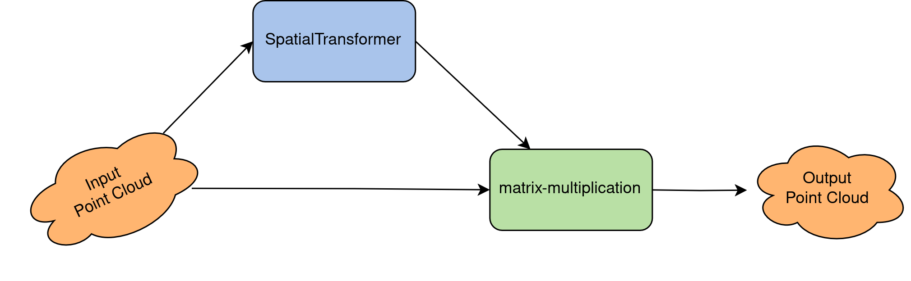
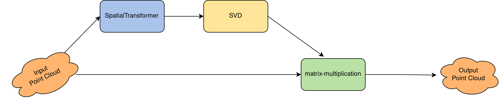
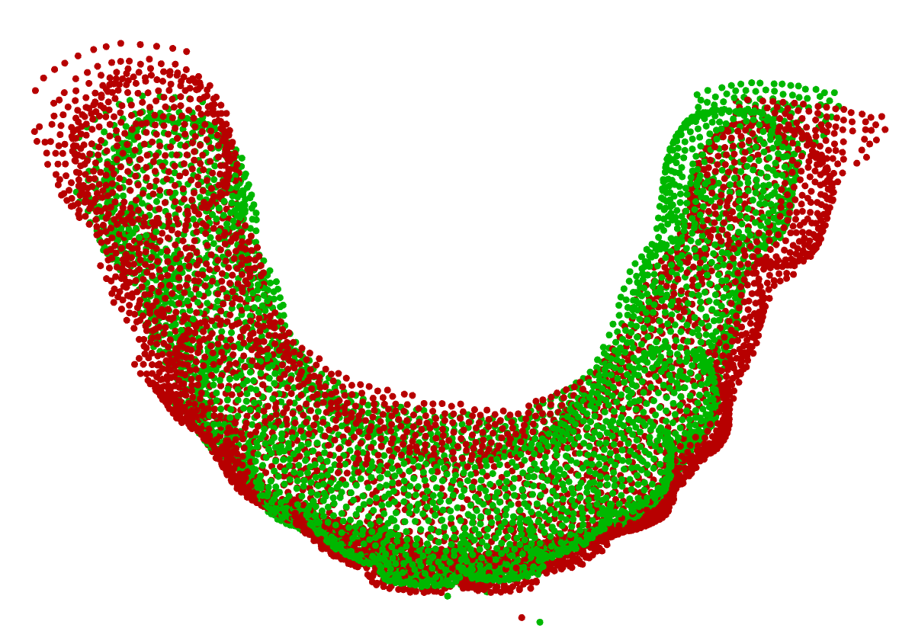
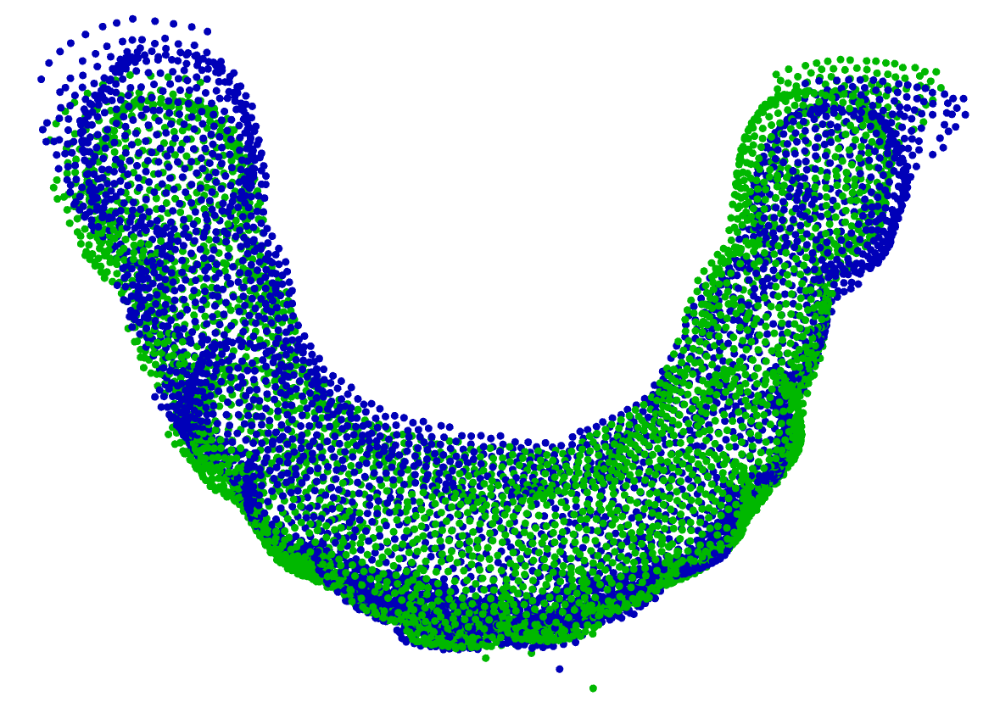
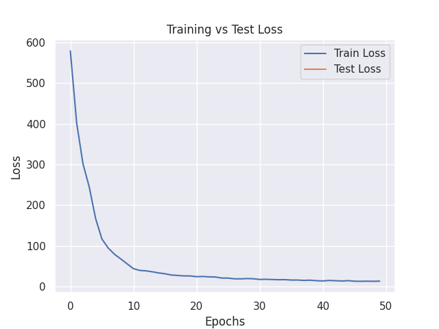
Margin-line estimation
The margin line is the boundary between the prepared tooth and the surrounding tissue — the curve the crown actually has to seat against, so its precision is a clinical constraint rather than an aesthetic one. Here DGCNN was adapted into a shape-completion model conditioned on tooth number, predicting the full contour from partial input.
Only about 178 labelled cases were available, so this is reported qualitatively. The predicted points track the ground-truth curve closely enough to suggest the approach is sound, but with a dataset that size no honest accuracy number can be quoted.
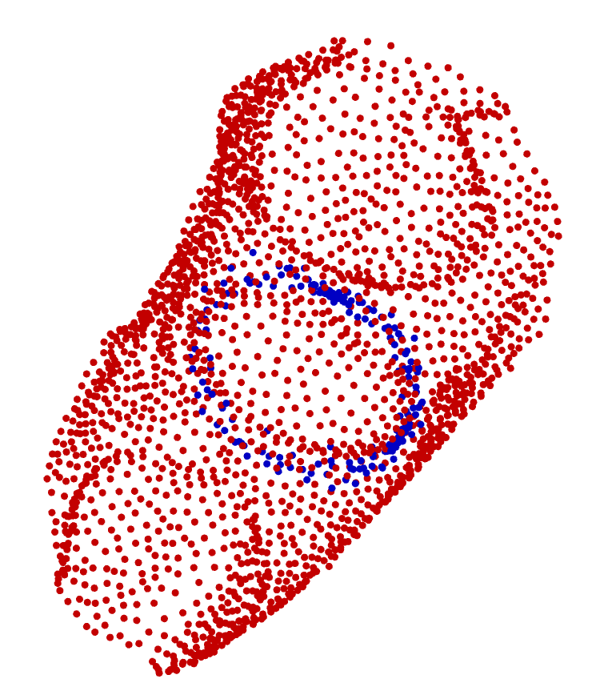
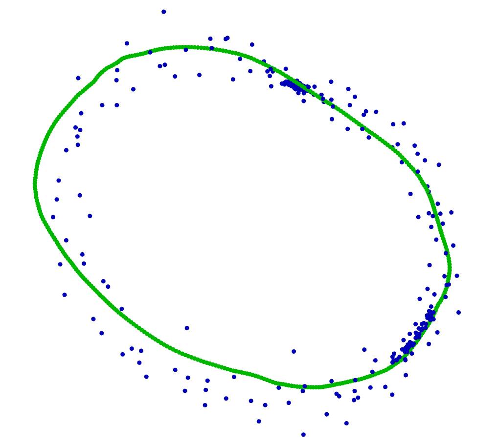
Crown generation
The generator takes the segmented, aligned tooth context with the target tooth masked out, and reconstructs the missing crown: an EdgeConv feature extractor for local geometry, a geometry-aware transformer encoder for global context, and a FoldingNet decoder that deforms a 2D grid into the output surface.
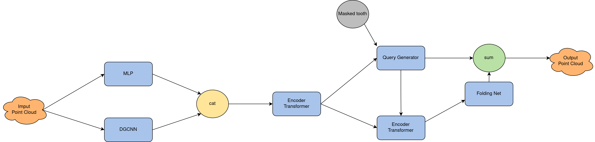
This module was never trained. Supervising it needs paired data — prepared tooth in, finished crown out — and no such labelled dataset was available. Every component is implemented and integrated end to end, and the architecture is documented in part 2 of the report, but there are no experimental results for this chapter and none are claimed. It is a designed pipeline waiting on data, not a working generator.

What shipped
The segmentation model is packaged as a FastAPI service and published to Docker Hub, taking .bmesh, .obj, .stl and .ply and exposing Swagger for interactive testing.
docker pull waleedalzamil80/teeth_segmentation_last_pct_model:latest
docker run -d -p 8000:8000 waleedalzamil80/teeth_segmentation_last_pct_model:latest
# → http://localhost:8000/docsThe deployed model is the rigid-transformation-invariant PCT variant rather than the 95% canonical-space one, so that it accepts a scan in any orientation without a separate alignment pass.
How it was trained
Everything ran on Kaggle: two NVIDIA Tesla T4s at 16 GB each, PyTorch 2.4.0 on CUDA 12.3, batch sizes of 16 or 32 depending on the model, inside a 12-hour session limit.
One methodological note worth stating plainly, because the plots invite the wrong reading. There was no validation split. The test set was evaluated after every epoch and plotted alongside training purely for visualisation — it was never used to tune hyperparameters or select a checkpoint. The honest way to read those curves is to ignore the test line and look only at the final epoch.
Limitations
- The generator is untrained. Nothing in this project produces a crown today. Changing that needs a labelled crown dataset, which realistically means a clinical collaboration.
- PCA was also tried for canonical alignment and works, but suffers from eigenvector direction ambiguity — the axes come out right up to a sign flip, which is why a learned aligner was worth the effort.
- Margin-line results are qualitative only, on ~178 cases.
- Everything is trained and evaluated on Teeth3DS alone. Robustness across scanners, resolutions and occlusion patterns is untested.
References
- Qi et al. — PointNet, and PointNet++
- Wang et al. — Dynamic Graph CNN (DGCNN / EdgeConv)
- Guo et al. — Point Cloud Transformer
- Yang et al. — FoldingNet
- Yu et al. — PoinTr, which informed the geometry-aware encoder